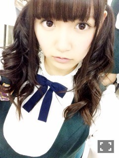
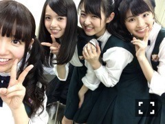
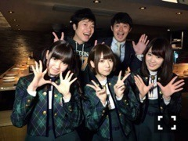
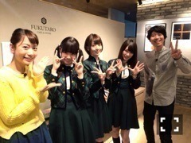
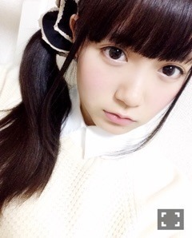

| 2015/01 25 Sun | ひめたん-OoO-その516 |
ニッポン放送 LIVE EXPO
TOKYO 2015
ALL LIVE NIPPON Vol.3
に出演させて頂きました！
こんなに大きなステージに
呼んでもらえるなんて幸せ( ´•̥ω•̥` )
来てくださったみなさん
素敵なステージを用意して下さった
スタッフのみなさん
ありがとうございました

10thアンダーライブメンバーとしての
最後のステージでもありました
10thの期間にたくさんのことを
経験させていただけたので
その集大成となるライブになったかなと
思っています＊
アルバム新録曲「自由の彼方」
初披露もしました（ ˆoˆ ）
ダンスがかっこいい曲です
ぜひ乃木坂のライブでも
これから歌っていきたいな！
乃木坂を観に来てくださったみなさんの
声援にはすごく安心しました( ˇωˇ )
他のアーティストさんのファンの
みなさんもあたたかく迎えて下さって
嬉しかったです＊
ななみん、真夏、ありがとうね～
ラジオ最高！！

わちゃー

わちゃちゃちゃー
さて、チーム福岡
オンエアされた番組の
オフショット貼りまあす
ＫＢＣ「ドォーモ」

ＴＮＣ「ＧｅｅＢｅｅ」

観てくださった方は
感想待ってるよ～（ ˆoˆ ）
これからオンエアのものもあるので
ひめの前回の日記や公式サイトを
ぜひチェックしてみて下さいっ
それからのぎ天の文芸部
楽しかったよー♡

ひめ上唇が薄いんだよね

 ひとり焼き肉、ひとり映画、
ひとり焼き肉、ひとり映画、
ひとり遊園地、、、
何までならひとりで出来る！？
ひとりカラオケ、ひとりカフェ
ひとり渋谷まで出来るよ\( ˆoˆ )/
焼き肉、映画、遊園地とか高度すぎて。
ひめたんは
ラグビーってスポーツ知ってる？
知ってるよ！
でも試合観戦とかしたことないんだ～
ラグビーってちょっと珍しいよね？
今度のたんひめの
個握行こうと思ってるんだけど
どんな事話せばいいかな？
どんなことでも嬉しいけれど
そうだな～はじめましてなら
ひめたんのこと知ったきっかけとか
聞きたいかも♡あと趣味の話とか♡
ひめたんは春服は先取りする派？
それとも、あったかくなってから
買う派？教えてー！
流行に疎いので、
先取りとかできない( >_< )
仕事の下見と打ち合わせで
東京スカイツリーに行かねばならんのよ
だけど自分、高所恐怖症なんよね
ひめたんどうしたらええ？
ソラマチ？だっけ？
登らなくても楽しいとこあるから
そっち担当にしてもらお（＾ω＾）
ひめたんはKIRIMIちゃん知ってる？
私KIRIMIちゃん大好きなの♡♡
KIRIMIちゃん知ってるよ～
ゆかいな仲間たちもかわいいよね♡
アニメ観てみたい～！
半身浴でコメント読むひめたん
のぼせないでね！
何時間くらいやってる？
1時間がいつも目標だけど
結構しんどい(´・ω・｀)
コメント読んだり、ひどいときは
スクフェスやったり。
のぼせない！気をつけます！
いつもたくさんのコメント
ありがとうございます
そうだ、もう1月終わる( >_< )
なんかね小学生低学年の時に先生が
「3学期はあっという間に
行く(1月)、逃げる(2月)、去る(3月)で
終わってしまいますよ～」
って言ってたのを
この時期になると思い出すんだよねぇ
あれから何年経ったのか知らんけど
今でも思い出して、
なんだか切なくなるの
っていう雑談。
あ、今日はひめたん46おやすみ( >_< )
(＊´・ω・＊)
コメント(911)
2015/01/25 23:30